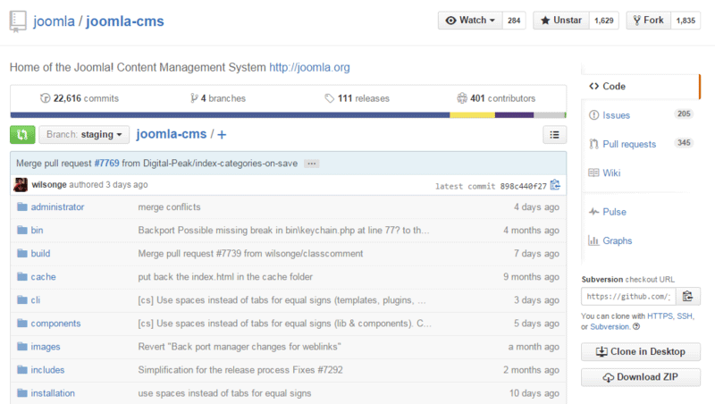

GitHub es una compañía sin fines de lucro que ofrece un servicio de hosting de repositorios almacenados en la nube.
Esencialmente, hace que sea más fácil para individuos y equipos usar Git como la versión de control y colaboración.
La interfaz de GitHub es bastante fácil de usar para el desarrollador novato que quiera aprovechar las ventajas del Git.
Sin GitHub, usar un Git generalmente requiere de un poco más de conocimientos de tecnología y uso de una línea de comando.
Imagen 2.1. GITHUB logo. Tomado de http://pngimg.com/imgs/logos/github/.
GitHub es tan fácil de usar, que incluso algunas personas usan GitHub para administrar otro tipo de proyectos – como escribir libros.
Además de esto, cualquier persona puede inscribirse y ser hospedar un repositorio de código público completamente gratuito, el cual hace que
GitHub sea especialmente popular con proyectos de fuente abierta.

Imagen 2.2. GITHUB interfaz. Tomado de https://docs.joomla.org/Using_the_Github_UI_to_Make_Pull_Requests/es.
Como compañía, GitHub hace dinero vendiendo alojamiento para repositorios de código privado, al igual que otros planes enfocados para
negocios, que hace más fácil que las organizaciones administren a los miembros de su equipo y su seguridad.
Imagen 2.3. GITHUB Desktop. Tomado de https://desktop.github.com/.